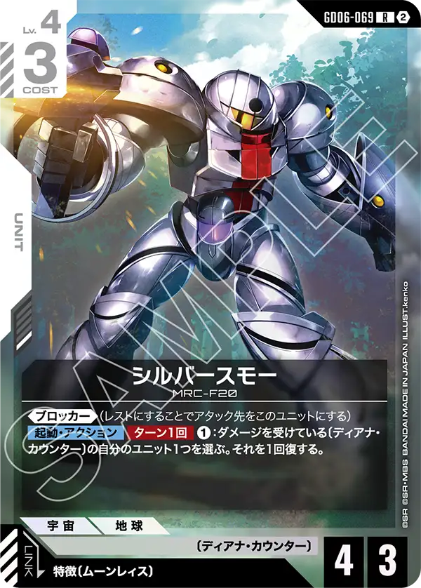
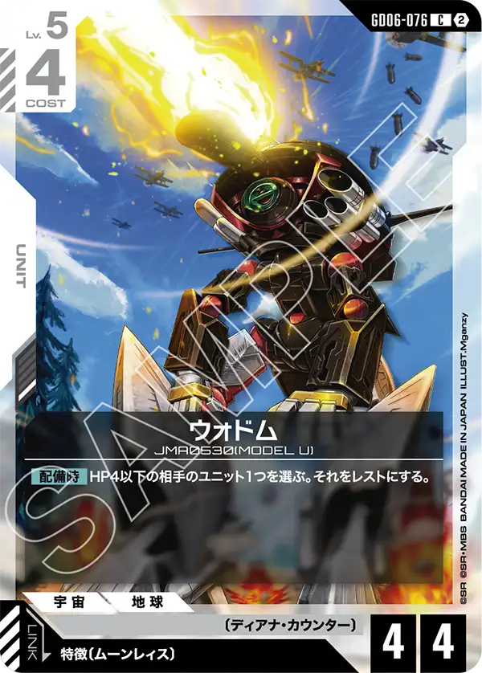
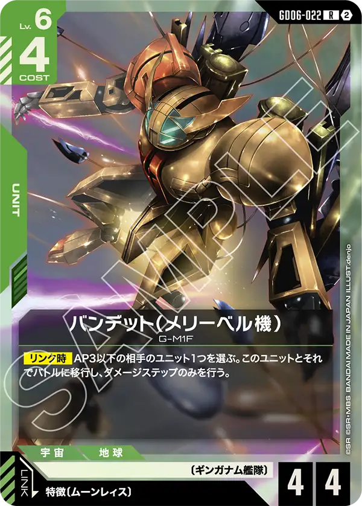
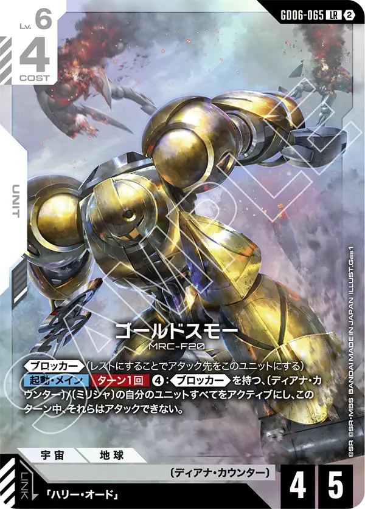
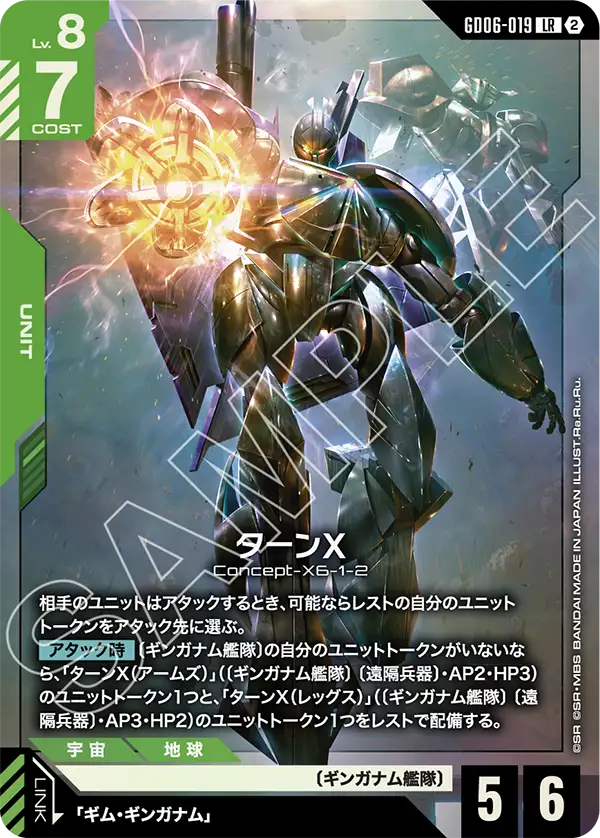
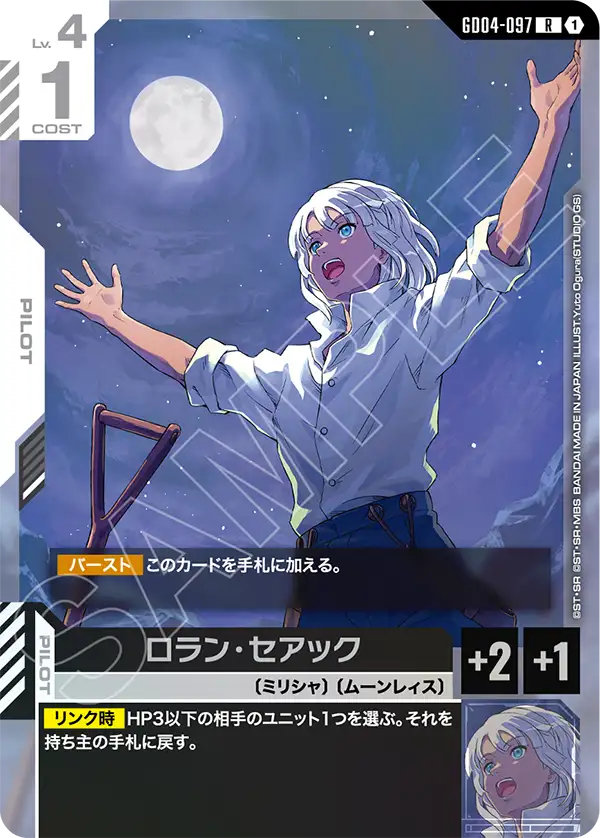
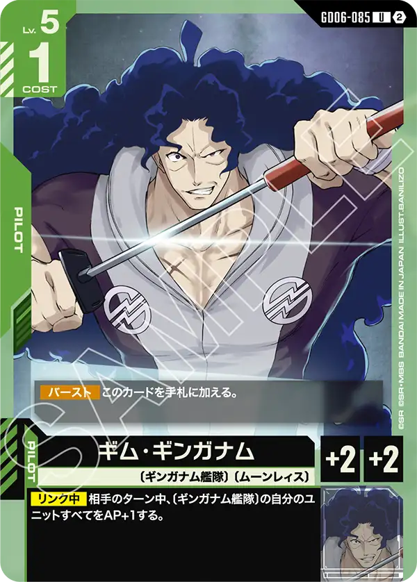
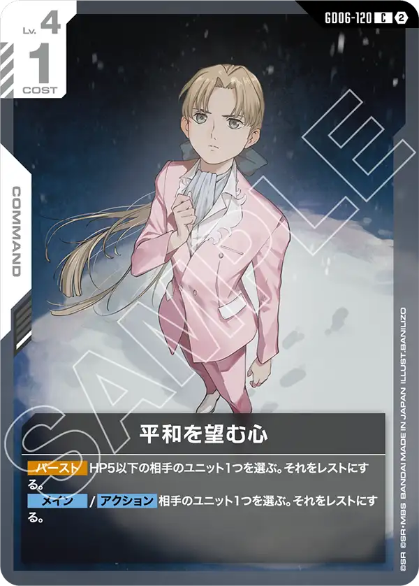
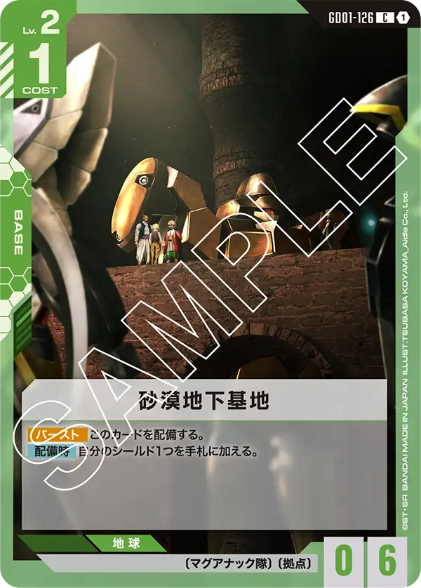

GD06が大会で使えるようになった11/7、ブックマーケット 野々市新庄店のニュータイプチャレンジ 2026 MISSION5（11月開催）で8位に入った緑/白デッキです。50枚のうちGD06のカードが10種31枚で、白の〔ディアナ・カウンター〕のカードを17枚、緑の〔ギンガナム艦隊〕のカードを8枚入れています。《ブロッカー》を持つユニットは19枚です。
デッキリスト
大会ページ: ブックマーケット 野々市新庄店 11/7。















| カード | 種類 | 色 | Lv | コスト | AP/HP | 枚数 | 緑/白での採用率 |
|---|---|---|---|---|---|---|---|
| GD01-086 ガンダム・ルブリス | ユニット | 白 | 3 | 2 | 2/4 | 1 | 27.3% (3) |
| GD04-077 フラット（ミリシャ仕様） | ユニット | 白 | 3 | 2 | 2/4 | 4 | 45.5% (5) |
| GD06-064 アルトロンガンダム（EW版） | ユニット | 白 | 3 | 3 | 3/4 | 4 | 54.5% (6) |
| GD04-073 ∀ガンダム 珍 | ユニット | 白 | 4 | 2 | 3/3 | 2 | 9.1% (1) |
| GD06-069 シルバースモー 珍 | ユニット | 白 | 4 | 3 | 4/3 | 4 | 9.1% (1) |
| GD04-068 シルヴァ・バレト | ユニット | 白 | 5 | 3 | 4/4 | 3 | 54.5% (6) |
| GD06-076 ウォドム 珍 | ユニット | 白 | 5 | 4 | 4/4 | 4 | 9.1% (1) |
| GD06-022 バンデット（メリーベル機） 珍 | ユニット | 緑 | 6 | 4 | 4/4 | 2 | 9.1% (1) |
| GD06-065 ゴールドスモー 珍 | ユニット | 白 | 6 | 4 | 4/5 | 3 | 9.1% (1) |
| GD06-019 ターンX | ユニット | 緑 | 8 | 7 | 5/6 | 3 | 27.3% (3) |
| GD04-097 ロラン・セアック 珍 | パイロット | 白 | 4 | 1 | — | 4 | 9.1% (1) |
| GD06-085 ギム・ギンガナム | パイロット | 緑 | 5 | 1 | — | 3 | 18.2% (2) |
| GD06-097 ハリー・オード | パイロット | 白 | 5 | 1 | — | 4 | 18.2% (2) |
| GD01-118 溢れる慈愛 | コマンド | 白 | 2 | 1 | — | 4 | 90.9% (10) |
| GD06-120 平和を望む心 | コマンド | 白 | 4 | 1 | — | 2 | 54.5% (6) |
| GD01-126 砂漠地下基地 | ベース | 緑 | 2 | 1 | —/6 | 1 | 63.6% (7) |
| GD06-130 ソレイユ | ベース | 白 | 5 | 1 | —/6 | 2 | 18.2% (2) |
ユニット30枚・パイロット11枚・コマンド6枚・ベース3枚。このうちGD06のカードは10種31枚です。
構成の見どころ
緑白が入賞したと言うことで前期の終盤に白緑ウィングがちょっと復活するかもと聞いて気になって見てみたが、新しいデッキが入賞していた。
GD06で登場したターンX[GD06-019]、ゴールドスモー[GD06-065]を中心として∀ガンダムのデッキとなっている。
事前評価が非常に高かったターンX[GD06-019]を中心に組まれたこのデッキは一見ブロッカーが非常に多く、受けるだけなのではないかと思われるが実態は異なっている。
ゴールドスモー[GD06-065]が通常であればあまり積極的に攻撃しないブロッカーを超攻撃的にさせている。
支払うコストが4というのはとても重たいコストだが、ターンX[GD06-019]を使うことで最小限のコストで盤面などを整える事ができるため、そのタイミングを狙って攻勢に動くのだろう。
また、ターンX[GD06-019]が出てくる前のタイミングも少しターンがあるので一度相手に攻撃を仕掛けてからターンX[GD06-019]を出して盤面を固めることも可能になっている。
ギム・ギンガナム[GD06-085]は相手ターン中に〔ギンガナム艦隊〕のAPを+1するため相手にすると絶妙に厄介となっている。
多くのプレイヤーが注目しているハリー・オード[GD06-097]も問題無く採用できるのはポイントが高い。
ブロッカー効果を2度使う事ができることやゴールドスモー[GD06-065]でアタック後にアクティブにすることができるため、相手にすると非常に厄介だろう。
ソレイユ[GD06-130]の効果によるAPマイナスも機能的に使う事ができるため、これらを上手く駆使して戦っていく形になるので相手の盤面や自分の今後のプランによって動かし方が様々に変わるデッキだと見える。
運営のひとこと
研究がまだ足りなく、入賞は難しいと思われた∀ガンダム作品のデッキが使用解禁直後に入賞したのは単にカードパワーが高いこともうかがえるが、プレイヤーの研究能力の向上がわかる形とも言える。
それを使いこなすプレイヤーも非常に能力が高いと言えるので、是非このデッキをより深く研究してより良いデッキに仕上げてほしいと思う。
数え方
採用率は、GD06が大会で使えるようになった11/7から11/9までのニュータイプチャレンジ 2026 MISSION5（11月開催）の入賞デッキのうち、デッキカラーが緑/白の11本を母数にしています。GD06の発売から日が浅く母数が少ないため、1本の違いで採用率が大きく動きます。「珍」は緑/白での採用率が10%未満のカードです。結果が16件ある大会は公式の順位どおり各順位2名で、このデッキは公式の15番目を8位と数えました。デッキリストが公開されていない入賞デッキは数に入れていません。数字は公式の大会結果から自動で集めた集計です。誤りに気づいたらXアカウント（@gcg_stats）のDMで教えてください。